Introdução à programação em R (tidyverse)
introR: introdução à linguagem R
14 de outubro de 2025
2. tidyverse

Ciência de dados ambiental (Environmental Data Science)
Ecoinformatics
Ciência de dados para ecólogos
(Data Science for Ecologists)
Environmental Data Science

Legal, mas ainda está distante…
Monitoramento automatizado
Monitoramento automatizado
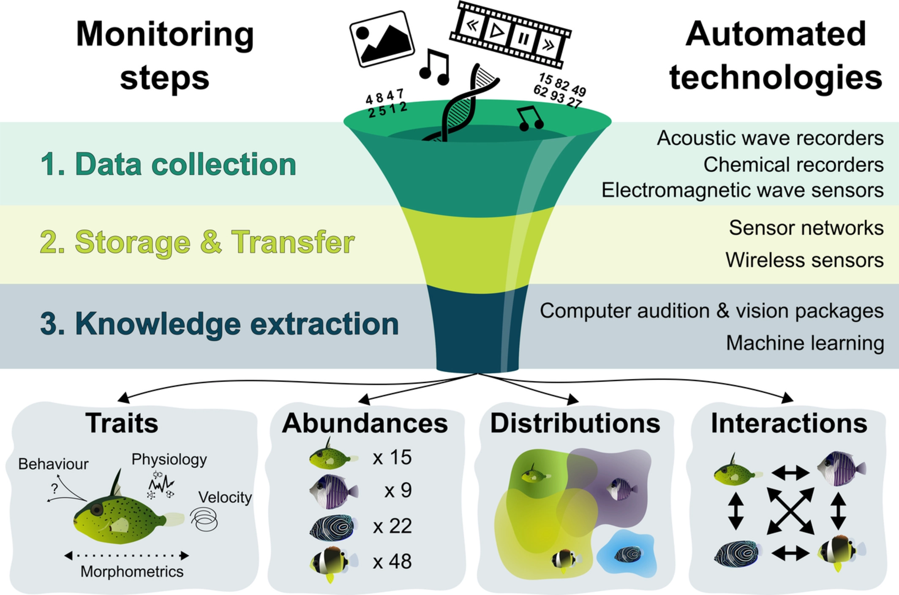 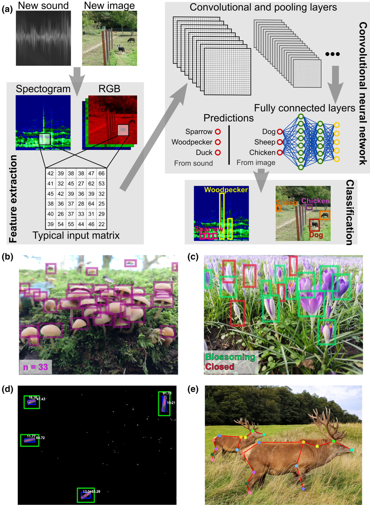
Script
Abram o script
02_script_r_introduction.R
tidyverse
Descrição
O
tidyverseé um conjunto de pacotes designados para Data ScienceTodos os pacotes compartilham uma filosofia de design, gramática e estruturas de dados
É um “dialeto novo” para a linguagem R
tidy: organizado, arrumado, ordenado
verse: universo
Fluxo de trabalho

Pacotes

Artigos
Wickham, Hadley. “Tidy data.” Journal of Statistical Software 59.10 (2014): 1-23.
Wickham, Hadley, et al. “Welcome to the Tidyverse.” Journal of Open Source Software 4.43 (2019): 1686.
Livro

Site


tidyverse
Para utilizar os pacotes é preciso instalar e carregar o pacote tidyverse
── Attaching core tidyverse packages ──────────────────────── tidyverse 2.0.0 ──
✔ dplyr 1.1.4 ✔ readr 2.1.5
✔ forcats 1.0.0 ✔ stringr 1.5.1
✔ ggplot2 3.5.2 ✔ tibble 3.3.0
✔ lubridate 1.9.4 ✔ tidyr 1.3.1
✔ purrr 1.1.0
── Conflicts ────────────────────────────────────────── tidyverse_conflicts() ──
✖ dplyr::filter() masks stats::filter()
✖ dplyr::lag() masks stats::lag()
ℹ Use the conflicted package (<http://conflicted.r-lib.org/>) to force all conflicts to become errorsPacotes do tidyverse
Listar os pacotes
[1] "broom" "conflicted" "cli" "dbplyr"
[5] "dplyr" "dtplyr" "forcats" "ggplot2"
[9] "googledrive" "googlesheets4" "haven" "hms"
[13] "httr" "jsonlite" "lubridate" "magrittr"
[17] "modelr" "pillar" "purrr" "ragg"
[21] "readr" "readxl" "reprex" "rlang"
[25] "rstudioapi" "rvest" "stringr" "tibble"
[29] "tidyr" "xml2" "tidyverse" Sintaxe
Todas as funções dos pacotes tidyverse usam fonte minúscula e _ para separar os nomes internos das funções (snake_case)
read_csv()
read_xlsx()
as_tibble()
left_join()
group_by()
Sintaxe
Geralmente indica-se de quais pacotes as funções são utilizadas (pacote::função) para evitar erros com outros pacotes
readr::read_csv()
readxl::read_xlsx()
tibble::as_tibble()
dplyr::left_join()
dplyr::group_by()

Descrição
Carrega e salva grandes arquivos de forma rápida
As funções fornecem medidores de progresso (big data)
Classificam o modo (tipo dos dados) de cada coluna
A classe do objeto atribuído é
tibbleFunções:
read_csv(): lê arquivos Comma-separated valuesread_csv2(): lê arquivos Comma-separated values (separado por ;)read_tsv(): lê arquivos Tab-separated valuesread_delim(): lê arquivos delim-separated valueswrite_csv(): escreve arquivos Comma-separated valueswrite_csv2(): escreve arquivos Comma-separated values (separado por ;)write_delim(): escreve arquivos delim-separated values
Diretório
Caminho no computador para importar e exportar dados
Definir diretório
Conferir diretório
[1] "/home/mude/data/github/course-intror/slides" [1] "00_slides_files" "00_slides.html" "00_slides.qmd"
[4] "01_slides_files" "01_slides.html" "01_slides.qmd"
[7] "02_slides_files" "02_slides.html" "02_slides.qmd"
[10] "03_slides.qmd" "03_slides.rmarkdown" "04_slides.qmd"
[13] "05_slides.qmd" "custom.scss" "img"
[16] "slides.Rproj" "styles.css" Importar dados
ATLANTIC AMPHIBIANS: a dataset of amphibian communities from the Atlantic Forests of South America

Importar dados
Formato .csv
# A tibble: 1,163 × 25
id reference_number species_number record sampled_habitat active_methods
<chr> <dbl> <dbl> <chr> <chr> <chr>
1 amp1001 1001 19 ab fo,ll as
2 amp1002 1002 16 co fo,la,ll as
3 amp1003 1002 14 co fo,la,ll as
4 amp1004 1002 13 co fo,la,ll as
5 amp1005 1003 30 co fo,ll,br as
6 amp1006 1004 42 co tp,pp,la,ll,is <NA>
7 amp1007 1005 23 co sp as
8 amp1008 1005 19 co sp,la,sw as,sb,tr
9 amp1009 1005 13 ab fo <NA>
10 amp1010 1006 1 ab fo <NA>
# ℹ 1,153 more rows
# ℹ 19 more variables: passive_methods <chr>, complementary_methods <chr>,
# period <chr>, month_start <dbl>, year_start <dbl>, month_finish <dbl>,
# year_finish <dbl>, effort_months <dbl>, country <chr>, state <chr>,
# state_abbreviation <chr>, municipality <chr>, site <chr>, latitude <dbl>,
# longitude <dbl>, coordinate_precision <chr>, altitude <dbl>,
# temperature <dbl>, precipitation <dbl>Importar dados
Formato .txt
# A tibble: 1,163 × 25
id reference_number species_number record sampled_habitat active_methods
<chr> <dbl> <dbl> <chr> <chr> <chr>
1 amp1001 1001 19 ab fo,ll as
2 amp1002 1002 16 co fo,la,ll as
3 amp1003 1002 14 co fo,la,ll as
4 amp1004 1002 13 co fo,la,ll as
5 amp1005 1003 30 co fo,ll,br as
6 amp1006 1004 42 co tp,pp,la,ll,is <NA>
7 amp1007 1005 23 co sp as
8 amp1008 1005 19 co sp,la,sw as,sb,tr
9 amp1009 1005 13 ab fo <NA>
10 amp1010 1006 1 ab fo <NA>
# ℹ 1,153 more rows
# ℹ 19 more variables: passive_methods <chr>, complementary_methods <chr>,
# period <chr>, month_start <dbl>, year_start <dbl>, month_finish <dbl>,
# year_finish <dbl>, effort_months <dbl>, country <chr>, state <chr>,
# state_abbreviation <chr>, municipality <chr>, site <chr>, latitude <dbl>,
# longitude <dbl>, coordinate_precision <chr>, altitude <dbl>,
# temperature <dbl>, precipitation <dbl>Descrição
Pacotes para importar e exportar planilhas no formato Excel®
Carrega e salva grandes arquivos de forma rápida
As funções fornecem medidores de progresso (big data)
Classificam o modo (tipo dos dados) de cada coluna
A classe do objeto atribuído é
tibbleFunções:
read_excel(): lê arquivos de planilhas Excel®read_xls(): lê arquivos de planilhas Excel® (antes de 2010)write_xlsx(): escreve arquivos de planilhas Excel®
Importar dados
Formato .xlsx
# A tibble: 1,163 × 25
id reference_number species_number record sampled_habitat active_methods
<chr> <dbl> <dbl> <chr> <chr> <chr>
1 amp1001 1001 19 ab fo,ll as
2 amp1002 1002 16 co fo,la,ll as
3 amp1003 1002 14 co fo,la,ll as
4 amp1004 1002 13 co fo,la,ll as
5 amp1005 1003 30 co fo,ll,br as
6 amp1006 1004 42 co tp,pp,la,ll,is NA
7 amp1007 1005 23 co sp as
8 amp1008 1005 19 co sp,la,sw as,sb,tr
9 amp1009 1005 13 ab fo NA
10 amp1010 1006 1 ab fo NA
# ℹ 1,153 more rows
# ℹ 19 more variables: passive_methods <chr>, complementary_methods <chr>,
# period <chr>, month_start <chr>, year_start <chr>, month_finish <chr>,
# year_finish <chr>, effort_months <chr>, country <chr>, state <chr>,
# state_abbreviation <chr>, municipality <chr>, site <chr>, latitude <dbl>,
# longitude <dbl>, coordinate_precision <chr>, altitude <dbl>,
# temperature <chr>, precipitation <chr>Exportar dados
Diversos formatos

Descrição
Dados importados de planilhas eletrônicas são data frames (quadro de dados)
tibble(classetbl_df) é um tipo especial de data frameClasse adequada para o funcionamento das das funções do
tidyverse

Espiando os dados
Descrição dos dados: linhas (Rows) e colunas (Columns)
Descrição das colunas: numbers(int, dbl), character(chr), logical(lgl) ou factor(fctr)
Rows: 1,163
Columns: 25
$ id <chr> "amp1001", "amp1002", "amp1003", "amp1004", "amp…
$ reference_number <dbl> 1001, 1002, 1002, 1002, 1003, 1004, 1005, 1005, …
$ species_number <dbl> 19, 16, 14, 13, 30, 42, 23, 19, 13, 1, 1, 2, 4, …
$ record <chr> "ab", "co", "co", "co", "co", "co", "co", "co", …
$ sampled_habitat <chr> "fo,ll", "fo,la,ll", "fo,la,ll", "fo,la,ll", "fo…
$ active_methods <chr> "as", "as", "as", "as", "as", "NA", "as", "as,sb…
$ passive_methods <chr> "pt", "pt", "pt", "pt", "NA", "NA", "NA", "NA", …
$ complementary_methods <chr> "NA", "NA", "NA", "NA", "NA", "NA", "NA", "NA", …
$ period <chr> "mo,da,tw,ni", "mo,da,tw,ni", "mo,da,tw,ni", "mo…
$ month_start <chr> "9", "12", "12", "12", "7", "NA", "4", "4", "4",…
$ year_start <chr> "2000", "2007", "2007", "2007", "1988", "NA", "2…
$ month_finish <chr> "1", "5", "5", "5", "8", "NA", "4", "4", "4", "7…
$ year_finish <chr> "2002", "2009", "2009", "2009", "2001", "NA", "2…
$ effort_months <chr> "16", "17", "17", "17", "157", "NA", "24", "24",…
$ country <chr> "Brazil", "Brazil", "Brazil", "Brazil", "Brazil"…
$ state <chr> "Piauí", "Ceará", "Ceará", "Ceará", "Ceará", "Ce…
$ state_abbreviation <chr> "BR-PI", "BR-CE", "BR-CE", "BR-CE", "BR-CE", "BR…
$ municipality <chr> "Canto do Buriti", "São Gonçalo do Amarante", "S…
$ site <chr> "Parque Nacional Serra das Confusões", "Dunas", …
$ latitude <dbl> -8.680000, -3.545527, -3.574194, -3.515250, -4.2…
$ longitude <dbl> -43.42194, -38.85783, -38.88869, -38.91880, -38.…
$ coordinate_precision <chr> "gm", "dd", "dd", "dd", "gm", "NA", "gms", "gms"…
$ altitude <dbl> 543, 15, 29, 25, 750, 745, 863, 878, 826, 93, 35…
$ temperature <chr> "24.98", "26.53", "26.45", "26.55", "21.35", "20…
$ precipitation <chr> "853", "1318", "1248", "1376", "1689", "1249", "…
René Magritte (1898-1967)
Artista surrealista belga
“Ceci n’est pas une pipe”
Isso não é um cachimbo

Descrição
Pipe pode ser traduzido como “cano” ou “tubo”
Permite o “encadeamento” de várias funções sem armazenar resultados intermediários
Captura o resultado de uma função e torna a entrada da próxima função
Os códigos se tornam mais simples, pois permite a leitura sequencial do mesmo
Operador pipe:
%>%Atalho:
crtl + shift + M
Se preparem para uma revisão de funções compostas
Função composta
Função composta no R


pipe
Sem pipe
Com pipe

pipe
Sem pipe
Com pipe
Exercício 01
Reescreva cada uma das operações utilizando pipes %>%
log10(cumsum(1:100))
sum(sqrt(abs(rnorm(100))))
sum(log((sample(1:10, 10000, rep = TRUE)))
05:00
Exercício 01
Solução
Exercício 01
Solução
Exercício 01
Solução
Para apresentar os próximos pacotes, vamos usar dados de pinguins!

palmerpenguins
Dados de medidas de pinguins chamados
palmerpenguinsDados coletados e disponibilizados pela Dra. Kristen Gorman e pela Palmer Station, Antarctica LTER, membro da Long Term Ecological Research Network
Dois conjuntos de dados:
penguins_raw(dados brutos)penguins(versão simplificada)

palmerpenguins

palmerpenguins

Descrição
Funções para tornar um conjunto de dados tidy (organizados), facilitando a manipulação, modelagem e visualização
Um conjunto de dados é condiderando tidy quando:
- Cada variável está em uma coluna
- Cada observação está em uma linha
- Cada valor está em uma célula
Funções

unite
Une dados de múltiplas colunas em apenas uma coluna
# unir colunas
penguins_raw_unir <- tidyr::unite(data = penguins_raw,
col = "region_island",
Region:Island,
sep = ", ",
remove = FALSE)
head(penguins_raw_unir[, c("Region", "Island", "region_island")])# A tibble: 6 × 3
Region Island region_island
<chr> <chr> <chr>
1 Anvers Torgersen Anvers, Torgersen
2 Anvers Torgersen Anvers, Torgersen
3 Anvers Torgersen Anvers, Torgersen
4 Anvers Torgersen Anvers, Torgersen
5 Anvers Torgersen Anvers, Torgersen
6 Anvers Torgersen Anvers, Torgersenseparate
Separa caracteres de uma coluna em múltiplas colunas
# separar colunas
penguins_raw_separar <- tidyr::separate(data = penguins_raw,
col = Stage,
into = c("stage", "egg_stage"),
sep = ", ",
remove = FALSE)
head(penguins_raw_separar[, c("Stage", "stage", "egg_stage")])# A tibble: 6 × 3
Stage stage egg_stage
<chr> <chr> <chr>
1 Adult, 1 Egg Stage Adult 1 Egg Stage
2 Adult, 1 Egg Stage Adult 1 Egg Stage
3 Adult, 1 Egg Stage Adult 1 Egg Stage
4 Adult, 1 Egg Stage Adult 1 Egg Stage
5 Adult, 1 Egg Stage Adult 1 Egg Stage
6 Adult, 1 Egg Stage Adult 1 Egg Stagedrop_na
Remove linhas com NA de todas as colunas
# remover linhas com na
penguins_raw_todas_na <- tidyr::drop_na(data = penguins_raw)
head(penguins_raw_todas_na)# A tibble: 6 × 17
studyName `Sample Number` Species Region Island Stage `Individual ID`
<chr> <dbl> <chr> <chr> <chr> <chr> <chr>
1 PAL0708 7 Adelie Penguin … Anvers Torge… Adul… N4A1
2 PAL0708 8 Adelie Penguin … Anvers Torge… Adul… N4A2
3 PAL0708 29 Adelie Penguin … Anvers Biscoe Adul… N18A1
4 PAL0708 30 Adelie Penguin … Anvers Biscoe Adul… N18A2
5 PAL0708 39 Adelie Penguin … Anvers Dream Adul… N25A1
6 PAL0809 69 Adelie Penguin … Anvers Torge… Adul… N32A1
# ℹ 10 more variables: `Clutch Completion` <chr>, `Date Egg` <date>,
# `Culmen Length (mm)` <dbl>, `Culmen Depth (mm)` <dbl>,
# `Flipper Length (mm)` <dbl>, `Body Mass (g)` <dbl>, Sex <chr>,
# `Delta 15 N (o/oo)` <dbl>, `Delta 13 C (o/oo)` <dbl>, Comments <chr>drop_na
Remove linhas com NA de uma única coluna
# remover linhas com na de uma coluna
penguins_raw_colunas_na <- tidyr::drop_na(data = penguins_raw,
any_of("Comments"))
head(penguins_raw_colunas_na[, "Comments"])# A tibble: 6 × 1
Comments
<chr>
1 Not enough blood for isotopes.
2 Adult not sampled.
3 Nest never observed with full clutch.
4 Nest never observed with full clutch.
5 No blood sample obtained.
6 No blood sample obtained for sexing. Exercícios
Exercício 02
Use os dados penguins_raw
Faça a união das colunas studyName e Individual ID na coluna StudyInd
Separe as colunas por -
05:00
Exercício 02
Solução
# exercicio 02
penguins_raw_uni_ind <- penguins_raw %>%
tidyr::unite(col = "StudyInd",
c(studyName, `Individual ID`),
sep = " - ",
remove = FALSE)
head(penguins_raw_uni_ind[, c("studyName", "Individual ID", "StudyInd")])# A tibble: 6 × 3
studyName `Individual ID` StudyInd
<chr> <chr> <chr>
1 PAL0708 N1A1 PAL0708 - N1A1
2 PAL0708 N1A2 PAL0708 - N1A2
3 PAL0708 N2A1 PAL0708 - N2A1
4 PAL0708 N2A2 PAL0708 - N2A2
5 PAL0708 N3A1 PAL0708 - N3A1
6 PAL0708 N3A2 PAL0708 - N3A2Exercício 03
Use os dados penguins_raw
Separe as informações de ano, mês e dia da coluna Date Egg
05:00
Exercício 03
Solução
# exercicio 03
penguins_raw_sep_data <- penguins_raw %>%
tidyr::separate(col = `Date Egg`,
into = c("Year", "Month", "Day"),
sep = "-",
remove = FALSE)
head(penguins_raw_sep_data[, c("Date Egg", "Year", "Month", "Day")])# A tibble: 6 × 4
`Date Egg` Year Month Day
<date> <chr> <chr> <chr>
1 2007-11-11 2007 11 11
2 2007-11-11 2007 11 11
3 2007-11-16 2007 11 16
4 2007-11-16 2007 11 16
5 2007-11-16 2007 11 16
6 2007-11-16 2007 11 16 Exercício 04
Use os dados penguins_raw
Remova as linhas que possuem NA na coluna Body
05:00
Exercício 04
Solução
# exercicio 04
penguins_raw_drop_na_body <- penguins_raw %>%
tidyr::drop_na(`Body Mass (g)`)
head(penguins_raw_drop_na_body)# A tibble: 6 × 17
studyName `Sample Number` Species Region Island Stage `Individual ID`
<chr> <dbl> <chr> <chr> <chr> <chr> <chr>
1 PAL0708 1 Adelie Penguin … Anvers Torge… Adul… N1A1
2 PAL0708 2 Adelie Penguin … Anvers Torge… Adul… N1A2
3 PAL0708 3 Adelie Penguin … Anvers Torge… Adul… N2A1
4 PAL0708 5 Adelie Penguin … Anvers Torge… Adul… N3A1
5 PAL0708 6 Adelie Penguin … Anvers Torge… Adul… N3A2
6 PAL0708 7 Adelie Penguin … Anvers Torge… Adul… N4A1
# ℹ 10 more variables: `Clutch Completion` <chr>, `Date Egg` <date>,
# `Culmen Length (mm)` <dbl>, `Culmen Depth (mm)` <dbl>,
# `Flipper Length (mm)` <dbl>, `Body Mass (g)` <dbl>, Sex <chr>,
# `Delta 15 N (o/oo)` <dbl>, `Delta 13 C (o/oo)` <dbl>, Comments <chr>Dúvidas?

Descrição
Funções que facilitam a manipulação de dados

Funções
Gramática simples que contém funções verbais para a manipulação de dados
- Verbos:
mutate(),select(),filter(),arrange(),summarise(),slice(),rename(), etc. - Replicação:
across(),if_any(),if_all(),where(),starts_with(),ends_with(),contains(), etc. - Agrupamento:
group_by()eungroup() - Junções:
inner_join(),full_join(),left_join(),right_join(), etc. - Combinações:
bind_rows()ebind_cols() - Resumos, contagem e seleção:
n(),n_distinct(),first(),last(),nth(), etc.
Funções
Colunas
relocate(): muda a ordem das colunas
rename(): muda o nome das colunas
select(): seleciona colunas pelo nome ou posição
pull(): seleciona uma coluna como vetor
mutate(): adiciona novas colunas ou resultados em colunas existentes
Linhas
arrange(): reordena as linhas com base nos valores de colunas
filter(): seleciona linhas com base em valores de colunas
slice(): seleciona linhas de diferente formas
distinct(): remove linhas com valores repetidos com base nos valores de colunas
Agrupamento
count(): conta observações para uma ou mais coluna
group_by(): agrupa linhas pelos valores das colunas
summarise(): resume os dados através de funções considerando valores das colunas
Sintaxe
O
tibbleé sempre o primeiro argumento das funções verbaisTodas seguem a mesma sintaxe:
- tibble
- operador pipe
- nome da função verbal com os argumentos entre parênteses
As funções verbais não modificam o tibble original
relocate
Reordena colunas por nome ou posição
# reordenar colunas - nome
penguins_relocate_col <- penguins %>%
dplyr::relocate(sex, year, .after = island)
head(penguins_relocate_col)# A tibble: 6 × 8
species island sex year bill_length_mm bill_depth_mm flipper_length_mm
<fct> <fct> <fct> <int> <dbl> <dbl> <int>
1 Adelie Torgersen male 2007 39.1 18.7 181
2 Adelie Torgersen female 2007 39.5 17.4 186
3 Adelie Torgersen female 2007 40.3 18 195
4 Adelie Torgersen <NA> 2007 NA NA NA
5 Adelie Torgersen female 2007 36.7 19.3 193
6 Adelie Torgersen male 2007 39.3 20.6 190
# ℹ 1 more variable: body_mass_g <int>relocate
Reordena colunas por nome ou posição
# reordenar colunas - posicao
penguins_relocate_ncol <- penguins %>%
dplyr::relocate(sex, year, .after = 2)
head(penguins_relocate_ncol)# A tibble: 6 × 8
species island sex year bill_length_mm bill_depth_mm flipper_length_mm
<fct> <fct> <fct> <int> <dbl> <dbl> <int>
1 Adelie Torgersen male 2007 39.1 18.7 181
2 Adelie Torgersen female 2007 39.5 17.4 186
3 Adelie Torgersen female 2007 40.3 18 195
4 Adelie Torgersen <NA> 2007 NA NA NA
5 Adelie Torgersen female 2007 36.7 19.3 193
6 Adelie Torgersen male 2007 39.3 20.6 190
# ℹ 1 more variable: body_mass_g <int>rename
Renomeia colunas
# renomear colunas
penguins_rename <- penguins %>%
dplyr::rename(bill_length = bill_length_mm,
bill_depth = bill_depth_mm,
flipper_length = flipper_length_mm,
body_mass = body_mass_g)
head(penguins_rename)# A tibble: 6 × 8
species island bill_length bill_depth flipper_length body_mass sex year
<fct> <fct> <dbl> <dbl> <int> <int> <fct> <int>
1 Adelie Torgersen 39.1 18.7 181 3750 male 2007
2 Adelie Torgersen 39.5 17.4 186 3800 female 2007
3 Adelie Torgersen 40.3 18 195 3250 female 2007
4 Adelie Torgersen NA NA NA NA <NA> 2007
5 Adelie Torgersen 36.7 19.3 193 3450 female 2007
6 Adelie Torgersen 39.3 20.6 190 3650 male 2007select
Seleciona colunas pela posição ou nome
# selecionar colunas por posicao
penguins_select_position <- penguins %>%
dplyr::select(3:6)
head(penguins_select_position)# A tibble: 6 × 4
bill_length_mm bill_depth_mm flipper_length_mm body_mass_g
<dbl> <dbl> <int> <int>
1 39.1 18.7 181 3750
2 39.5 17.4 186 3800
3 40.3 18 195 3250
4 NA NA NA NA
5 36.7 19.3 193 3450
6 39.3 20.6 190 3650select
Seleciona colunas pela posição ou nome
# selecionar colunas por nomes
penguins_select_names <- penguins %>%
dplyr::select(bill_length_mm:body_mass_g)
head(penguins_select_names)# A tibble: 6 × 4
bill_length_mm bill_depth_mm flipper_length_mm body_mass_g
<dbl> <dbl> <int> <int>
1 39.1 18.7 181 3750
2 39.5 17.4 186 3800
3 40.3 18 195 3250
4 NA NA NA NA
5 36.7 19.3 193 3450
6 39.3 20.6 190 3650select
Remove colunas pela posição ou nome
# remover colunas pelo nome
penguins_select_names_remove <- penguins %>%
dplyr::select(-(bill_length_mm:body_mass_g))
head(penguins_select_names_remove)# A tibble: 6 × 4
species island sex year
<fct> <fct> <fct> <int>
1 Adelie Torgersen male 2007
2 Adelie Torgersen female 2007
3 Adelie Torgersen female 2007
4 Adelie Torgersen <NA> 2007
5 Adelie Torgersen female 2007
6 Adelie Torgersen male 2007select
Seleciona ou remove colunas por um padrão nos nomes
# selecionar colunas por padrao - starts_with(), ends_with() e contains()
penguins_select_contains <- penguins %>%
dplyr::select(contains("_mm"))
head(penguins_select_contains)# A tibble: 6 × 3
bill_length_mm bill_depth_mm flipper_length_mm
<dbl> <dbl> <int>
1 39.1 18.7 181
2 39.5 17.4 186
3 40.3 18 195
4 NA NA NA
5 36.7 19.3 193
6 39.3 20.6 190pull
Seleciona uma coluna como vetor
mutate
Adiciona colunas novas ou advindas de operações
# adicionar colunas
penguins_mutate <- penguins %>%
dplyr::mutate(body_mass_kg = body_mass_g/1e3, .before = sex)
head(penguins_mutate)# A tibble: 6 × 9
species island bill_length_mm bill_depth_mm flipper_length_mm body_mass_g
<fct> <fct> <dbl> <dbl> <int> <int>
1 Adelie Torgersen 39.1 18.7 181 3750
2 Adelie Torgersen 39.5 17.4 186 3800
3 Adelie Torgersen 40.3 18 195 3250
4 Adelie Torgersen NA NA NA NA
5 Adelie Torgersen 36.7 19.3 193 3450
6 Adelie Torgersen 39.3 20.6 190 3650
# ℹ 3 more variables: body_mass_kg <dbl>, sex <fct>, year <int>arrange
Reordena linhas de forma crescente pelos valores de uma coluna
# reordenar os valores por ordem crescente
penguins_arrange <- penguins %>%
dplyr::arrange(body_mass_g)
head(penguins_arrange)# A tibble: 6 × 8
species island bill_length_mm bill_depth_mm flipper_length_mm body_mass_g
<fct> <fct> <dbl> <dbl> <int> <int>
1 Chinstrap Dream 46.9 16.6 192 2700
2 Adelie Biscoe 36.5 16.6 181 2850
3 Adelie Biscoe 36.4 17.1 184 2850
4 Adelie Biscoe 34.5 18.1 187 2900
5 Adelie Dream 33.1 16.1 178 2900
6 Adelie Torgersen 38.6 17 188 2900
# ℹ 2 more variables: sex <fct>, year <int>arrange
Reordena linhas de forma decrescente pelos valores de uma coluna
# reordenar os valores por ordem decrescente
penguins_arrange_desc <- penguins %>%
dplyr::arrange(desc(body_mass_g))
head(penguins_arrange_desc)# A tibble: 6 × 8
species island bill_length_mm bill_depth_mm flipper_length_mm body_mass_g
<fct> <fct> <dbl> <dbl> <int> <int>
1 Gentoo Biscoe 49.2 15.2 221 6300
2 Gentoo Biscoe 59.6 17 230 6050
3 Gentoo Biscoe 51.1 16.3 220 6000
4 Gentoo Biscoe 48.8 16.2 222 6000
5 Gentoo Biscoe 45.2 16.4 223 5950
6 Gentoo Biscoe 49.8 15.9 229 5950
# ℹ 2 more variables: sex <fct>, year <int>arrange
Reordena linhas de forma decrescente pelos valores de uma coluna
# reordenar os valores por ordem decrescente
penguins_arrange_desc_m <- penguins %>%
dplyr::arrange(-body_mass_g)
head(penguins_arrange_desc_m)# A tibble: 6 × 8
species island bill_length_mm bill_depth_mm flipper_length_mm body_mass_g
<fct> <fct> <dbl> <dbl> <int> <int>
1 Gentoo Biscoe 49.2 15.2 221 6300
2 Gentoo Biscoe 59.6 17 230 6050
3 Gentoo Biscoe 51.1 16.3 220 6000
4 Gentoo Biscoe 48.8 16.2 222 6000
5 Gentoo Biscoe 45.2 16.4 223 5950
6 Gentoo Biscoe 49.8 15.9 229 5950
# ℹ 2 more variables: sex <fct>, year <int>filter
Filtra linhas por valores de uma coluna
# filtrar linhas por valores de uma coluna
penguins_filter <- penguins %>%
dplyr::filter(species == "Adelie")
head(penguins_filter)# A tibble: 6 × 8
species island bill_length_mm bill_depth_mm flipper_length_mm body_mass_g
<fct> <fct> <dbl> <dbl> <int> <int>
1 Adelie Torgersen 39.1 18.7 181 3750
2 Adelie Torgersen 39.5 17.4 186 3800
3 Adelie Torgersen 40.3 18 195 3250
4 Adelie Torgersen NA NA NA NA
5 Adelie Torgersen 36.7 19.3 193 3450
6 Adelie Torgersen 39.3 20.6 190 3650
# ℹ 2 more variables: sex <fct>, year <int>filter
Filtra linhas por valores de várias colunas
# filtrar linhas por valores de duas colunas
penguins_filter_two <- penguins %>%
dplyr::filter(species == "Adelie" & sex == "female")
head(penguins_filter_two)# A tibble: 6 × 8
species island bill_length_mm bill_depth_mm flipper_length_mm body_mass_g
<fct> <fct> <dbl> <dbl> <int> <int>
1 Adelie Torgersen 39.5 17.4 186 3800
2 Adelie Torgersen 40.3 18 195 3250
3 Adelie Torgersen 36.7 19.3 193 3450
4 Adelie Torgersen 38.9 17.8 181 3625
5 Adelie Torgersen 41.1 17.6 182 3200
6 Adelie Torgersen 36.6 17.8 185 3700
# ℹ 2 more variables: sex <fct>, year <int>filter
Filtra linhas por vários valores de várias colunas
# filtrar linhas por mais de um valor e mais de uma coluna
penguins_filter_in <- penguins %>%
dplyr::filter(species %in% c("Adelie", "Gentoo"),
sex == "female")
head(penguins_filter_in)# A tibble: 6 × 8
species island bill_length_mm bill_depth_mm flipper_length_mm body_mass_g
<fct> <fct> <dbl> <dbl> <int> <int>
1 Adelie Torgersen 39.5 17.4 186 3800
2 Adelie Torgersen 40.3 18 195 3250
3 Adelie Torgersen 36.7 19.3 193 3450
4 Adelie Torgersen 38.9 17.8 181 3625
5 Adelie Torgersen 41.1 17.6 182 3200
6 Adelie Torgersen 36.6 17.8 185 3700
# ℹ 2 more variables: sex <fct>, year <int>slice
Seleciona linhas por intervalos, indicando quais linhas desejamos
# selecionar linhas por intervalos
penguins_slice <- penguins %>%
dplyr::slice(c(1, 3, 300:n()))
head(penguins_slice)# A tibble: 6 × 8
species island bill_length_mm bill_depth_mm flipper_length_mm body_mass_g
<fct> <fct> <dbl> <dbl> <int> <int>
1 Adelie Torgersen 39.1 18.7 181 3750
2 Adelie Torgersen 40.3 18 195 3250
3 Chinstrap Dream 50.6 19.4 193 3800
4 Chinstrap Dream 46.7 17.9 195 3300
5 Chinstrap Dream 52 19 197 4150
6 Chinstrap Dream 50.5 18.4 200 3400
# ℹ 2 more variables: sex <fct>, year <int>slice
Seleciona linhas iniciais
# selecionar linhas iniciais
penguins_slice_head <- penguins %>%
dplyr::slice_head(n = 5)
head(penguins_slice_head)# A tibble: 5 × 8
species island bill_length_mm bill_depth_mm flipper_length_mm body_mass_g
<fct> <fct> <dbl> <dbl> <int> <int>
1 Adelie Torgersen 39.1 18.7 181 3750
2 Adelie Torgersen 39.5 17.4 186 3800
3 Adelie Torgersen 40.3 18 195 3250
4 Adelie Torgersen NA NA NA NA
5 Adelie Torgersen 36.7 19.3 193 3450
# ℹ 2 more variables: sex <fct>, year <int>slice
Seleciona linhas aleatoriamente, com e sem reposição
# selecionar linhas aleatoriamente
penguins_slice_sample <- penguins %>%
dplyr::slice_sample(n = 30, replace = FALSE)
head(penguins_slice_sample)# A tibble: 6 × 8
species island bill_length_mm bill_depth_mm flipper_length_mm body_mass_g
<fct> <fct> <dbl> <dbl> <int> <int>
1 Adelie Dream 39 18.7 185 3650
2 Adelie Torgersen 37.7 19.8 198 3500
3 Adelie Dream 36 17.9 190 3450
4 Adelie Torgersen 41.5 18.3 195 4300
5 Chinstrap Dream 50.5 18.4 200 3400
6 Adelie Biscoe 38.2 18.1 185 3950
# ℹ 2 more variables: sex <fct>, year <int>distinct
Retira linhas com valores duplicados com base nos valores de colunas
distinct
Retira linhas com valores duplicados com base nos valores de colunas, mas mantendo as colunas
# retirar linhas com valores duplicados e manter colunas
penguins_distinct_keep_all <- penguins %>%
dplyr::distinct(body_mass_g, .keep_all = TRUE)
head(penguins_distinct_keep_all)# A tibble: 6 × 8
species island bill_length_mm bill_depth_mm flipper_length_mm body_mass_g
<fct> <fct> <dbl> <dbl> <int> <int>
1 Adelie Torgersen 39.1 18.7 181 3750
2 Adelie Torgersen 39.5 17.4 186 3800
3 Adelie Torgersen 40.3 18 195 3250
4 Adelie Torgersen NA NA NA NA
5 Adelie Torgersen 36.7 19.3 193 3450
6 Adelie Torgersen 39.3 20.6 190 3650
# ℹ 2 more variables: sex <fct>, year <int>count
Conta valores de uma ou mais colunas (variáveis categóricas)
count
Conta valores de uma ou mais colunas (variáveis categóricas)
count
Conta valores de uma ou mais colunas (variáveis categóricas) ordenando a contagem
# contagens de valores para mais de uma coluna
penguins_count_two_sort <- penguins %>%
dplyr::count(species, island, sort = TRUE)
penguins_count_two_sort# A tibble: 5 × 3
species island n
<fct> <fct> <int>
1 Gentoo Biscoe 124
2 Chinstrap Dream 68
3 Adelie Dream 56
4 Adelie Torgersen 52
5 Adelie Biscoe 44group_by
Transforma um tibble em um tibble agrupado, onde as operações são realizadas “por grupo”
# A tibble: 6 × 8
# Groups: species [1]
species island bill_length_mm bill_depth_mm flipper_length_mm body_mass_g
<fct> <fct> <dbl> <dbl> <int> <int>
1 Adelie Torgersen 39.1 18.7 181 3750
2 Adelie Torgersen 39.5 17.4 186 3800
3 Adelie Torgersen 40.3 18 195 3250
4 Adelie Torgersen NA NA NA NA
5 Adelie Torgersen 36.7 19.3 193 3450
6 Adelie Torgersen 39.3 20.6 190 3650
# ℹ 2 more variables: sex <fct>, year <int>summarise
Agrega ou resume dados através de funções síntese
# resumo
penguins_summarise <- penguins %>%
dplyr::group_by(species) %>%
dplyr::summarize(body_mass_g_mean = mean(body_mass_g, na.rm = TRUE),
body_mass_g_sd = sd(body_mass_g, na.rm = TRUE))
penguins_summarise# A tibble: 3 × 3
species body_mass_g_mean body_mass_g_sd
<fct> <dbl> <dbl>
1 Adelie 3701. 459.
2 Chinstrap 3733. 384.
3 Gentoo 5076. 504.Exercícios
Exercício 05
Use os dados penguins
Adicione essas novas colunas:
bill_length_mm_log10bill_depth_mm_log10flipper_length_mm_log10body_mass_g_log10
Que são a operação log10() das colunas:
bill_length_mm_log10bill_depth_mm_log10flipper_length_mm_log10body_mass_g_log10
05:00
Exercício 05
Solução
# exercicio 05
penguins_log <- penguins %>%
dplyr::mutate(bill_length_mm_log10 = log10(bill_length_mm),
bill_depth_mm_log10 = log10(bill_depth_mm),
flipper_length_mm_log10 = log10(flipper_length_mm),
body_mass_g_log10 = log10(body_mass_g))
penguins_log# A tibble: 344 × 12
species island bill_length_mm bill_depth_mm flipper_length_mm body_mass_g
<fct> <fct> <dbl> <dbl> <int> <int>
1 Adelie Torgersen 39.1 18.7 181 3750
2 Adelie Torgersen 39.5 17.4 186 3800
3 Adelie Torgersen 40.3 18 195 3250
4 Adelie Torgersen NA NA NA NA
5 Adelie Torgersen 36.7 19.3 193 3450
6 Adelie Torgersen 39.3 20.6 190 3650
7 Adelie Torgersen 38.9 17.8 181 3625
8 Adelie Torgersen 39.2 19.6 195 4675
9 Adelie Torgersen 34.1 18.1 193 3475
10 Adelie Torgersen 42 20.2 190 4250
# ℹ 334 more rows
# ℹ 6 more variables: sex <fct>, year <int>, bill_length_mm_log10 <dbl>,
# bill_depth_mm_log10 <dbl>, flipper_length_mm_log10 <dbl>,
# body_mass_g_log10 <dbl>Exercício 06
Use os dados penguins
Ordene as linhas de forma decrescente pela coluna body_mass_g
05:00
Exercício 06
Solução
# A tibble: 344 × 8
species island bill_length_mm bill_depth_mm flipper_length_mm body_mass_g
<fct> <fct> <dbl> <dbl> <int> <int>
1 Gentoo Biscoe 49.2 15.2 221 6300
2 Gentoo Biscoe 59.6 17 230 6050
3 Gentoo Biscoe 51.1 16.3 220 6000
4 Gentoo Biscoe 48.8 16.2 222 6000
5 Gentoo Biscoe 45.2 16.4 223 5950
6 Gentoo Biscoe 49.8 15.9 229 5950
7 Gentoo Biscoe 48.4 14.6 213 5850
8 Gentoo Biscoe 49.3 15.7 217 5850
9 Gentoo Biscoe 55.1 16 230 5850
10 Gentoo Biscoe 49.5 16.2 229 5800
# ℹ 334 more rows
# ℹ 2 more variables: sex <fct>, year <int>Exercício 07
Usando os dados penguins
Filtre as linhas com valores de:
bill_length_mmmaior que 50 mmbill_depth_mmmenor que 20 mmflipper_length_mmmaior que 220 mmbody_mass_gmenor que 5500 g
05:00
Exercício 07
Solução
# exercicio 07
penguins_filter <- penguins %>%
dplyr::filter(bill_length_mm > 50,
bill_depth_mm < 20,
flipper_length_mm > 220,
body_mass_g < 5500)
penguins_filter# A tibble: 6 × 8
species island bill_length_mm bill_depth_mm flipper_length_mm body_mass_g
<fct> <fct> <dbl> <dbl> <int> <int>
1 Gentoo Biscoe 50.5 15.9 225 5400
2 Gentoo Biscoe 50.1 15 225 5000
3 Gentoo Biscoe 52.5 15.6 221 5450
4 Gentoo Biscoe 52.2 17.1 228 5400
5 Gentoo Biscoe 50.8 15.7 226 5200
6 Gentoo Biscoe 51.1 16.5 225 5250
# ℹ 2 more variables: sex <fct>, year <int>Exercício 08
Use os dados penguins
Amostre aleatoriamente 70% das linhas com body_mass_g menor que 5000 g
05:00
Exercício 08
Solução
# exercicio 08
penguins_sample <- penguins %>%
dplyr::filter(body_mass_g < 5000) %>%
dplyr::slice_sample(prop = .7)
penguins_sample# A tibble: 192 × 8
species island bill_length_mm bill_depth_mm flipper_length_mm body_mass_g
<fct> <fct> <dbl> <dbl> <int> <int>
1 Chinstrap Dream 46.4 18.6 190 3450
2 Chinstrap Dream 51.3 18.2 197 3750
3 Chinstrap Dream 52 20.7 210 4800
4 Adelie Biscoe 39.6 20.7 191 3900
5 Chinstrap Dream 42.5 17.3 187 3350
6 Adelie Torgers… 38.5 17.9 190 3325
7 Adelie Torgers… 40.3 18 195 3250
8 Chinstrap Dream 48.1 16.4 199 3325
9 Gentoo Biscoe 45.2 13.8 215 4750
10 Adelie Dream 37 16.5 185 3400
# ℹ 182 more rows
# ℹ 2 more variables: sex <fct>, year <int>Dúvidas?
3. Visualização de dados

Script
Abram o script
03_script_r_introduction.R
Contextualização
Contextualização
Melhor forma de apresentar, sintetizar, discutir e interpretar seus dados
Necessário em quase todas as análises estatísticas
Necessário em quase todas as publicações, trabalhos de consultoria, TCC, dissertação, tese, etc.
Existem vários tipos de gráficos para representar os padrões em seus dados para diferentes tipos de finalidades
De forma simplificada, os gráficos são representações dos nossos dados tabulares
Como mentir com estatística?
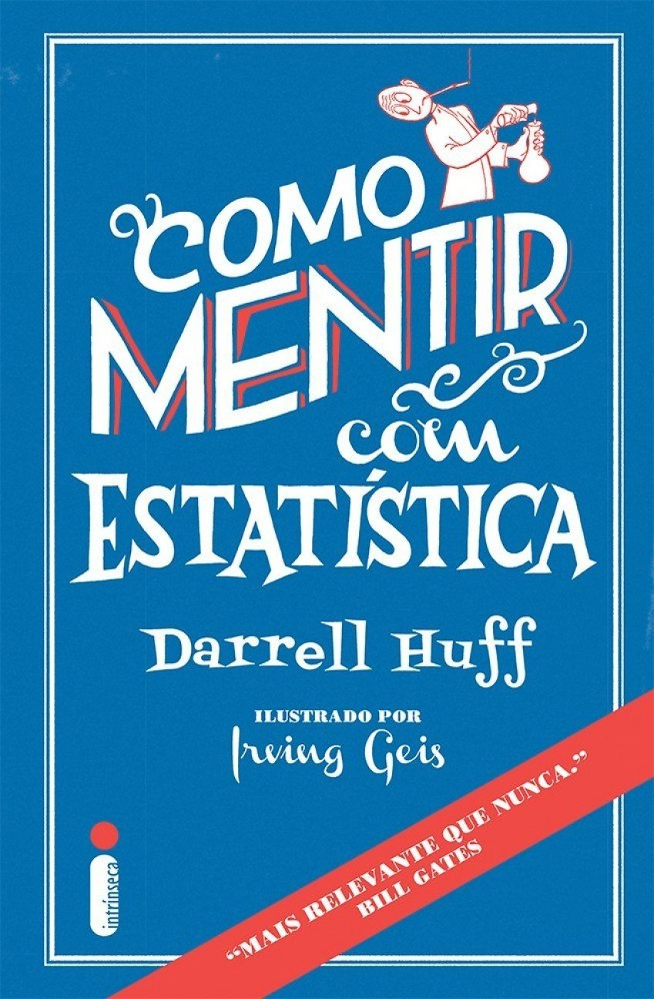 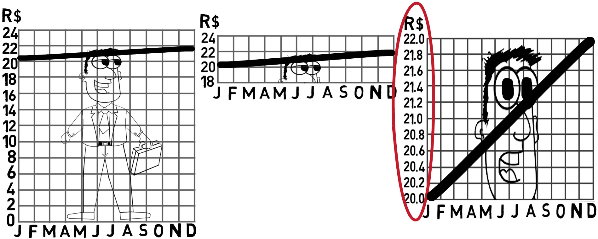
Principais pacotes
Principais pacotes
graphics: simples e útil para visualizações rápidas
ggplot2: integrado ao tidyverse, possui uma sintaxe própria baseada na gramática de gráficos por camadas (layers)
ggplot2 extentions: conjunto de pacotes com diversas expansões ao pacote ggplot2. Exemplos: GGally, gganimate e esquisse
visdat: visualizações preliminares de conjuntos de dados para identificar problemas
ggpubr: fornece funções simplificadas para criar gráficos para publicação
cowplot: permite combinar vários gráficos
patchwork: permite combinar vários gráficos
plotly: cria gráficos interativos usando JavaScript (plotly.js)
palmerpenguins

graphics
Default do R e mais simples
Pode ser utilizado para objetos de diversas classes
Funções:

ggplot2
Integrado ao
tidyverse, possui uma sintaxe própria de camadas (layers)Necessita de funções específicas para objetos de classes diferentes
Funções:

ggpubr
Funções para criar e personalizar plots para publicações baseadas no ggplot2
Necessita de funções específicas para gerar gráficos específicos
Funções:
Gramática dos gráficos
Descrição
Wilkinson (2005) Grammar of Graphics: representação gráfica dos dados a partir de atributos estéticos (do inglês aesthetic)
 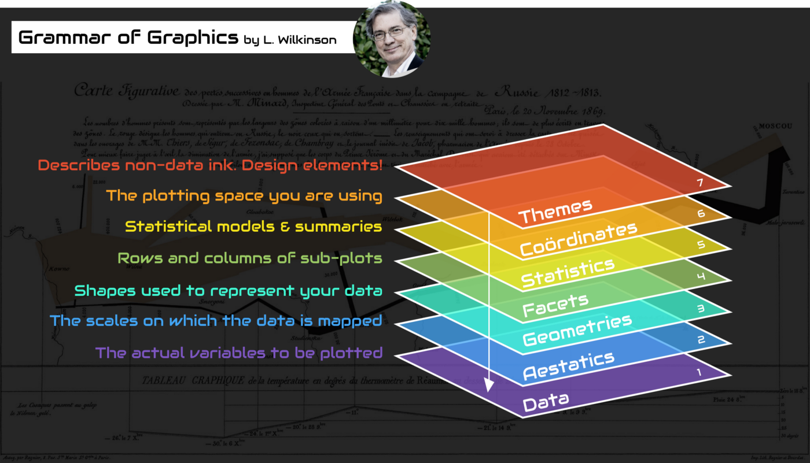
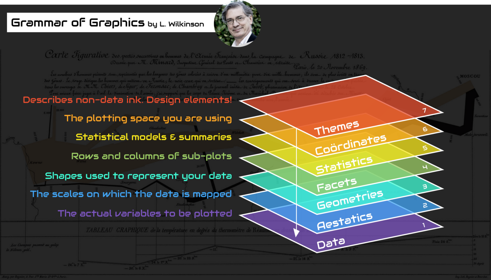
Camadas (layers)

ggplot2
Wickham (2008) criou o pacote ggplot2, onde “gg” representa a contração de Grammar of Graphics


Principais tipos de gráficos
Elementos de um gráfico
Representações das colunas (eixos) e linhas (elementos)

Tipos de variáveis


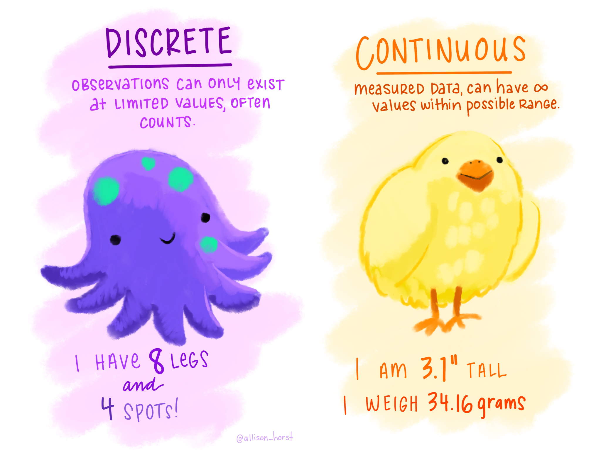
Tipos de variáveis e tipos gráficos

Tipos de variáveis e tipos gráficos
R CHARTS

Histograma (Histogram)
Histograma (Histogram)
Representa dados de uma coluna
Dados do tipo discreto ou contínuo
Distribuição de frequência ou densidade

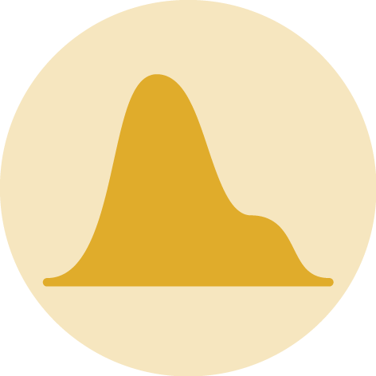
Histograma (Histogram)


Histograma (Histogram)

Densidade (Density)
Densidade (Density)
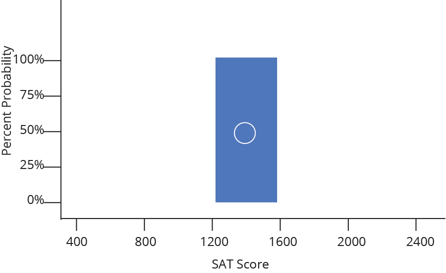

Histograma (Histogram)
graphics
Histograma (Histogram)
graphics
Histograma (Histogram)
graphics
Histograma (Histogram)
graphics
Histograma (Histogram)
graphics
Histograma (Histogram)
graphics
Densidade (Density)
graphics
par(mar = c(5, 5, 5, 5))
hist(penguins$flipper_length_mm,
col = "gray50",
border = "gray",
main = "Comprimento da nadadeira dos penguins",
xlab = "Comprimento da nadadeira (mm)",
ylab = "Densidade",
br = 50,
cex.main = 2,
cex.lab = 2,
cex.axis = 1.5,
prob = TRUE)
lines(density(na.omit(penguins$flipper_length_mm)))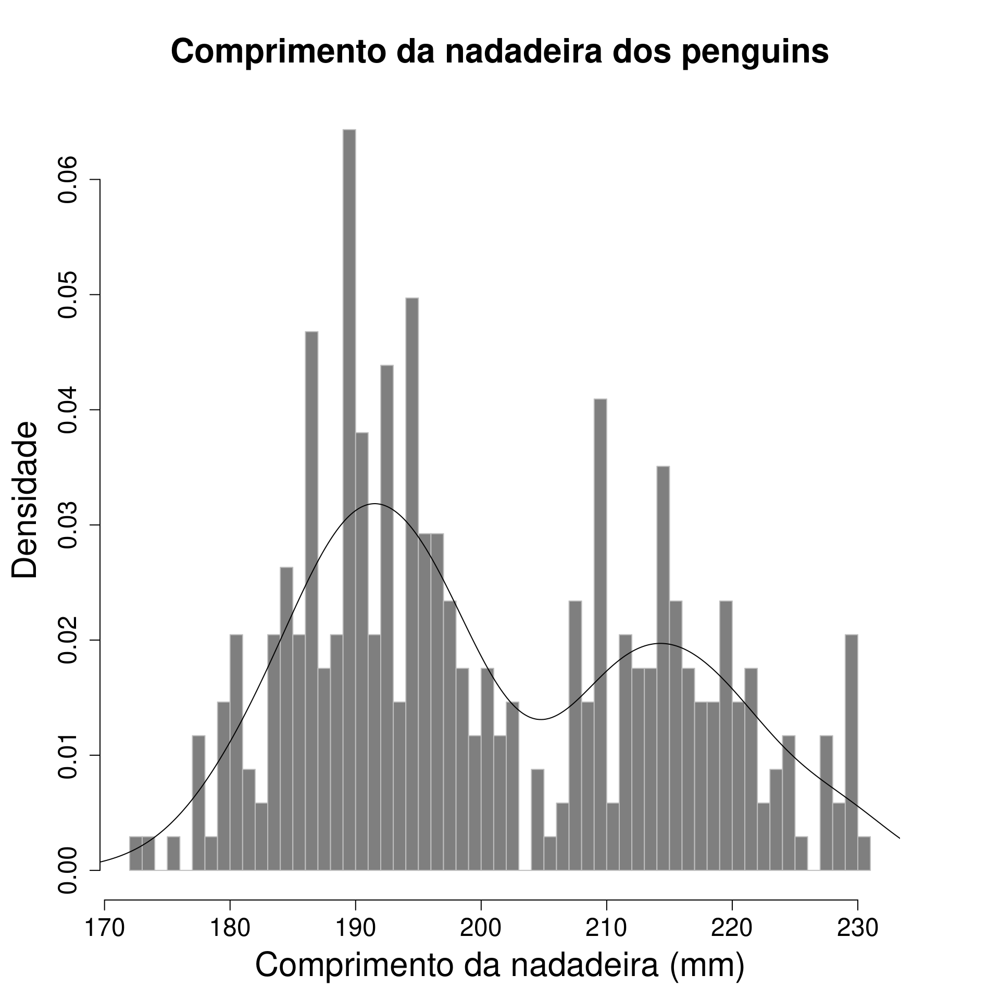
Densidade (Density)
graphics
par(mar = c(5, 5, 5, 5))
plot(density(na.omit(penguins$flipper_length_mm)),
col = "gray50",
main = "Comprimento da nadadeira dos penguins",
xlab = "Comprimento da nadadeira (mm)",
ylab = "Densidade",
cex.main = 2,
cex.lab = 2,
cex.axis = 1.5)
polygon(density(na.omit(penguins$flipper_length_mm)),
col = "gray50")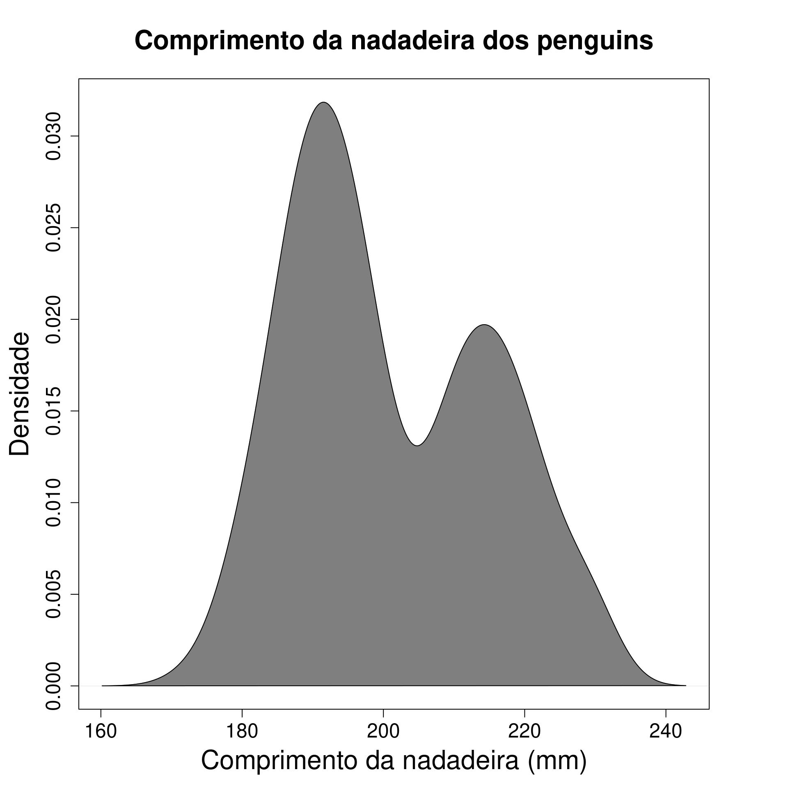
Densidade (Density)
Exportar
par(mar = c(5, 5, 5, 5))
plot(density(na.omit(penguins$flipper_length_mm)),
col = "gray50",
main = "Comprimento da nadadeira dos penguins",
xlab = "Comprimento da nadadeira (mm)",
ylab = "Frequência",
cex.main = 2, cex.lab = 2, cex.axis = 1.5)
polygon(density(na.omit(penguins$flipper_length_mm)), col = "gray50")Histograma (Histogram)
ggplot2
Histograma (Histogram)
ggplot2
Histograma (Histogram)
ggplot2
Histograma (Histogram)
ggplot2
Histograma (Histogram)
ggplot2
Histograma (Histogram)
ggplot2
Histograma (Histogram)
ggplot2
Histograma (Histogram)
ggplot2
ggplot(data = penguins,
aes(x = flipper_length_mm, fill = species)) +
geom_histogram(alpha = .5, position = "identity") +
scale_fill_manual(values = c("darkorange", "darkorchid", "cyan4")) +
labs(title = "Comprimento da nadadeira dos penguins",
fill = "Espécies",
x = "Comprimento da nadadeira (mm)",
y = "Frequência") +
theme_bw(base_size = 20)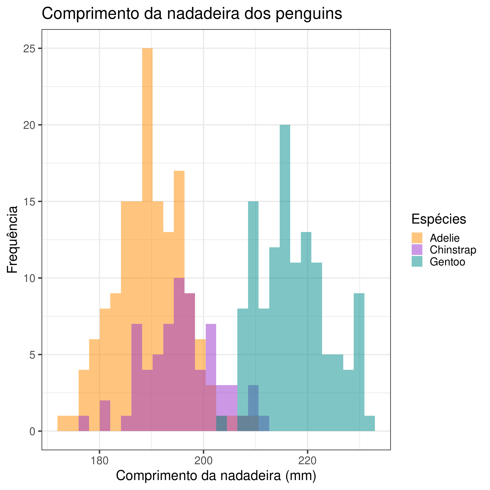
Histograma (Histogram)
ggplot2
ggplot(data = penguins,
aes(x = flipper_length_mm, fill = species)) +
geom_histogram() +
scale_fill_manual(values = c("darkorange", "darkorchid", "cyan4")) +
facet_wrap(~ species, ncol = 2, scale = "free_y") +
labs(title = "Comprimento da nadadeira dos penguins",
fill = "Espécies",
x = "Comprimento da nadadeira (mm)",
y = "Frequência") +
theme_bw(base_size = 20)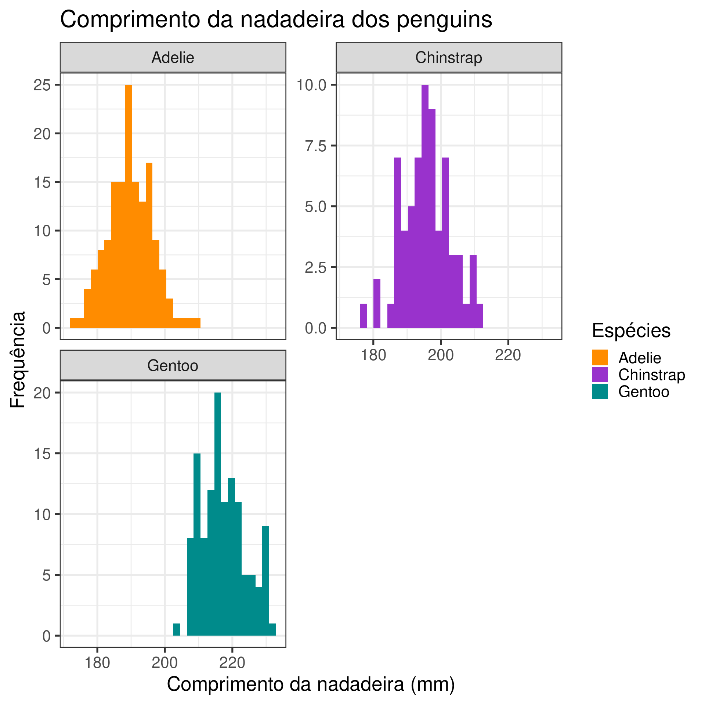
Histograma (Histogram)
ggplot2
ggplot(data = penguins,
aes(x = flipper_length_mm, fill = species)) +
geom_histogram() +
scale_fill_manual(values = c("darkorange", "darkorchid", "cyan4")) +
facet_grid(species ~ .) +
labs(title = "Comprimento da nadadeira dos penguins",
fill = "Espécies",
x = "Comprimento da nadadeira (mm)",
y = "Frequência") +
theme_bw(base_size = 20)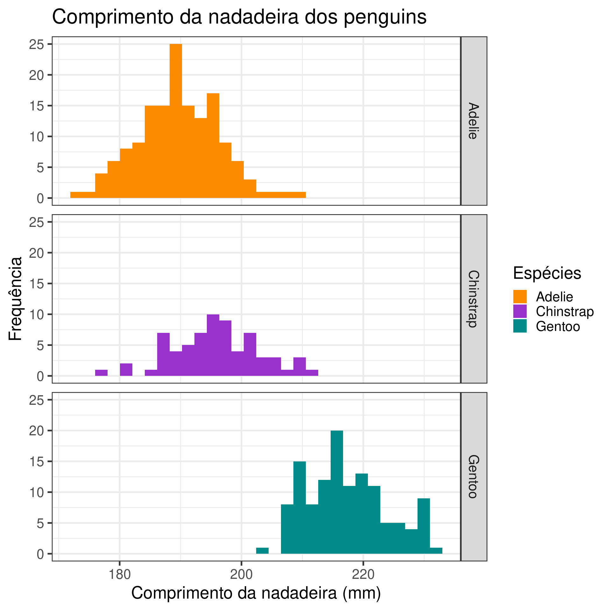
Densidade (Density)
ggplot2
Densidade (Density)
ggplot2
Densidade (Density)
ggplot2
ggplot_densidade <- ggplot(data = penguins,
aes(x = flipper_length_mm, fill = species)) +
geom_density(alpha = .5) +
scale_fill_manual(values = c("darkorange", "darkorchid", "cyan4")) +
labs(x = "Comprimento da nadadeira (mm)",
y = "Densidade",
fill = "Espécie") +
theme_bw(base_size = 20)
ggsave(filename = "density_ggplot2.png",
plot = ggplot_densidade, wi = 20, he = 15, un = "cm", dpi = 300)Histograma (Histogram)
ggpubr
Densidade (Density)
ggpubr
Histograma (Histogram)
ggpubr
ggpubr_densidade <- ggdensity(data = penguins,
x = "flipper_length_mm",
add = "median",
color = "species",
fill = "species",
palette = c("darkorange", "darkorchid", "cyan4"),
xlab = "Comprimento da nadadeira (mm)",
ylab = "Densidade")
ggsave(filename = "densidade_ggpubr.png",
plot = ggpubr_densidade, wi = 20, he = 15, un = "cm", dpi = 300)Gráfico de setores
(Pie chart)
Gráfico de setores (Pie chart)
Representa dados de uma coluna
Dados do tipo categórico
Proporção ou porcentagem de dados categóricos
Gráfico de setores (Pie chart)
graphic
Gráfico de setores (Pie chart)
Gráfico de setores (Pie chart)
graphic
Gráfico de setores (Pie chart)
ggplot2
ggplot(data = penguins_prop,
aes(x = "", y = prop, fill = species)) +
geom_bar(stat = "identity", color = "white") +
coord_polar("y", start = 0) +
geom_text(aes(label = paste0(prop, "%")), color = "white",
position = position_stack(vjust = .5), size = 8) +
scale_fill_manual(values = c("darkorange", "purple", "cyan4")) +
theme_void() +
labs(fill = "Espécie")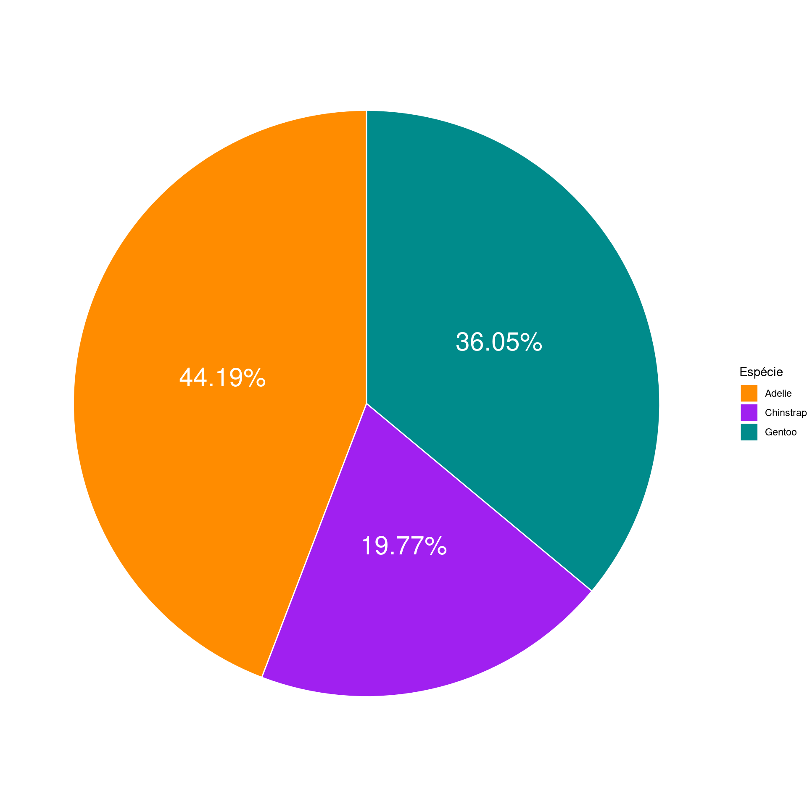
Gráfico de setores (Pie chart)
ggpubr
Gráfico de setores (Donut chart)
Gráfico de setores (Donut chart)
Representa dados de uma coluna
Dados do tipo categórico
Proporção ou porcentagem de dados categóricos

Gráfico de setores (Donut chart)
ggplot
ggplot(data = penguins_prop, aes(x = 2, y = prop, fill = species)) +
geom_bar(stat = "identity") +
coord_polar(theta = "y", start = 0) +
geom_text(aes(label = paste0(prop, "%")), color = "white",
position = position_stack(vjust = .5), size = 5) +
scale_fill_manual(values = c("darkorange", "purple", "cyan4")) +
xlim(0, 2.5) +
theme_void() +
theme(legend.position = c(.5, .5),
legend.title = element_text(size = 20),
legend.text = element_text(size = 15)) +
labs(fill = "Espécie")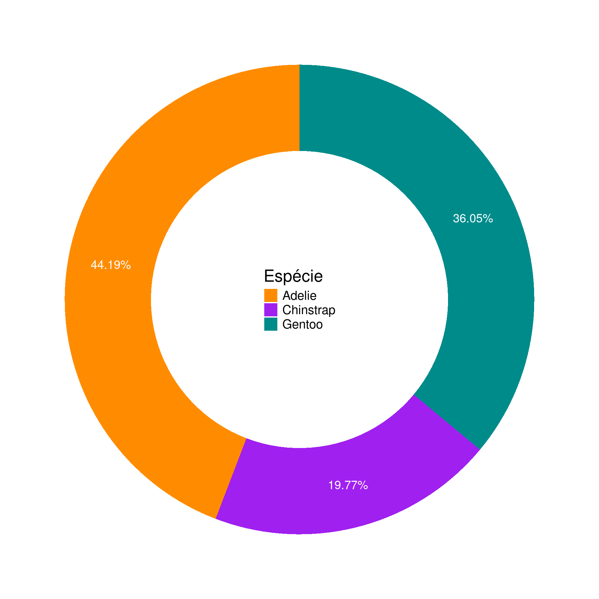
Gráfico de setores (Donut chart)
ggpubr
Gráfico de barras
(Bar plot)
Gráfico de barras (Bar plot)
Representa dados de duas colunas
Dados do tipo categóricos: X = categórico e Y = categórico
Resume dados de contagens para uma coluna
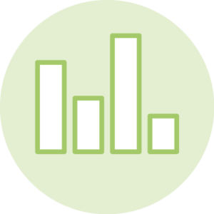
Gráfico de barras (Bar plot)
Tabela de Frequência
Gráfico de barras (Bar plot)
graphics
Gráfico de barras (Bar plot)
ggplot2
ggplot(data = penguins_count,
aes(x = species, y = n, fill = species)) +
geom_bar(stat = "identity") +
geom_label(aes(label = n), fill = "white", size = 10) +
scale_fill_manual(values = c("darkorange", "purple", "cyan4")) +
theme_bw(base_size = 15) +
theme(legend.position = "none") +
labs(x = "Espécie",
y = "Número de indivíduos",
fill = "Espécie")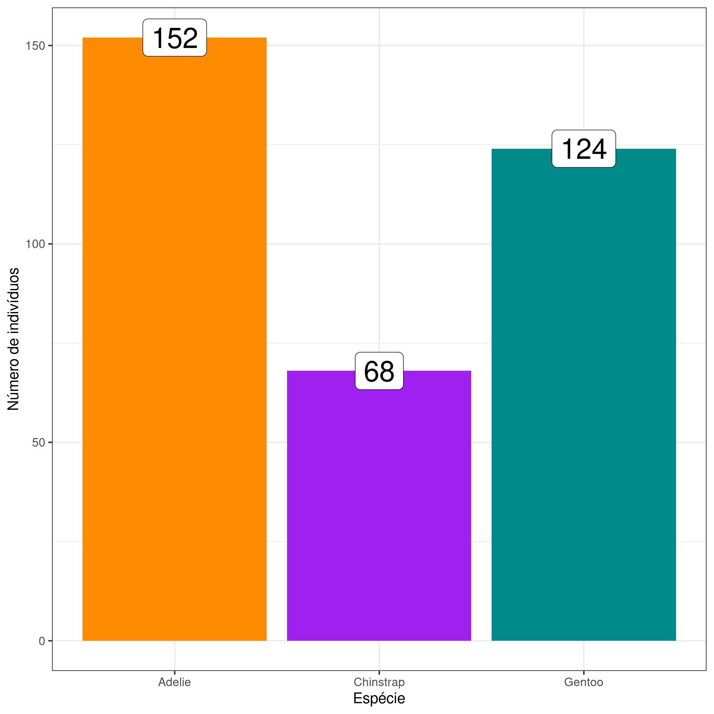
Gráfico de barras (Bar plot)
ggplot2
ggplot(data = penguins_count,
aes(x = species, y = n, fill = species)) +
geom_bar(stat = "identity") +
geom_label(aes(label = n), fill = "white", size = 10) +
scale_fill_manual(values = c("darkorange", "purple", "cyan4")) +
coord_flip() +
theme_bw(base_size = 15) +
theme(legend.position = "none") +
labs(x = "Espécie",
y = "Número de indivíduos",
fill = "Espécie")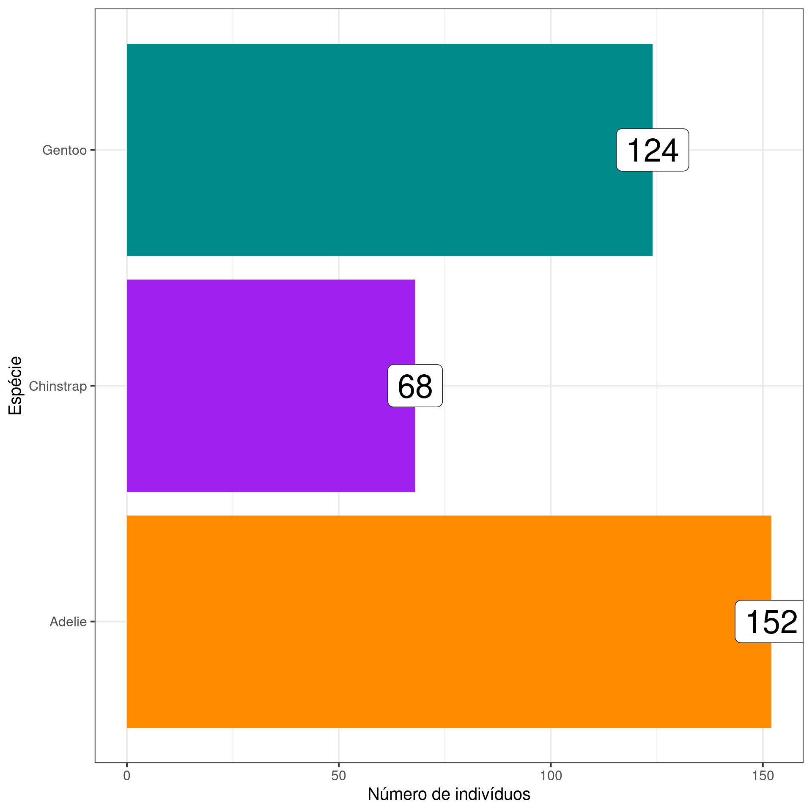
Gráfico de barras (Bar plot)
ggpubr
ggbarplot(penguins_count,
x = "species",
y = "n",
fill = "species",
color = "species",
palette = c("darkorange", "purple", "cyan4"),
label = TRUE,
lab.pos = "in",
lab.col = "white",
lab.size = 8,
main = "Número de indivíduos coletados por espécie",
xlab = "Espécies",
ylab = "Frequência absoluta",
legend = "none")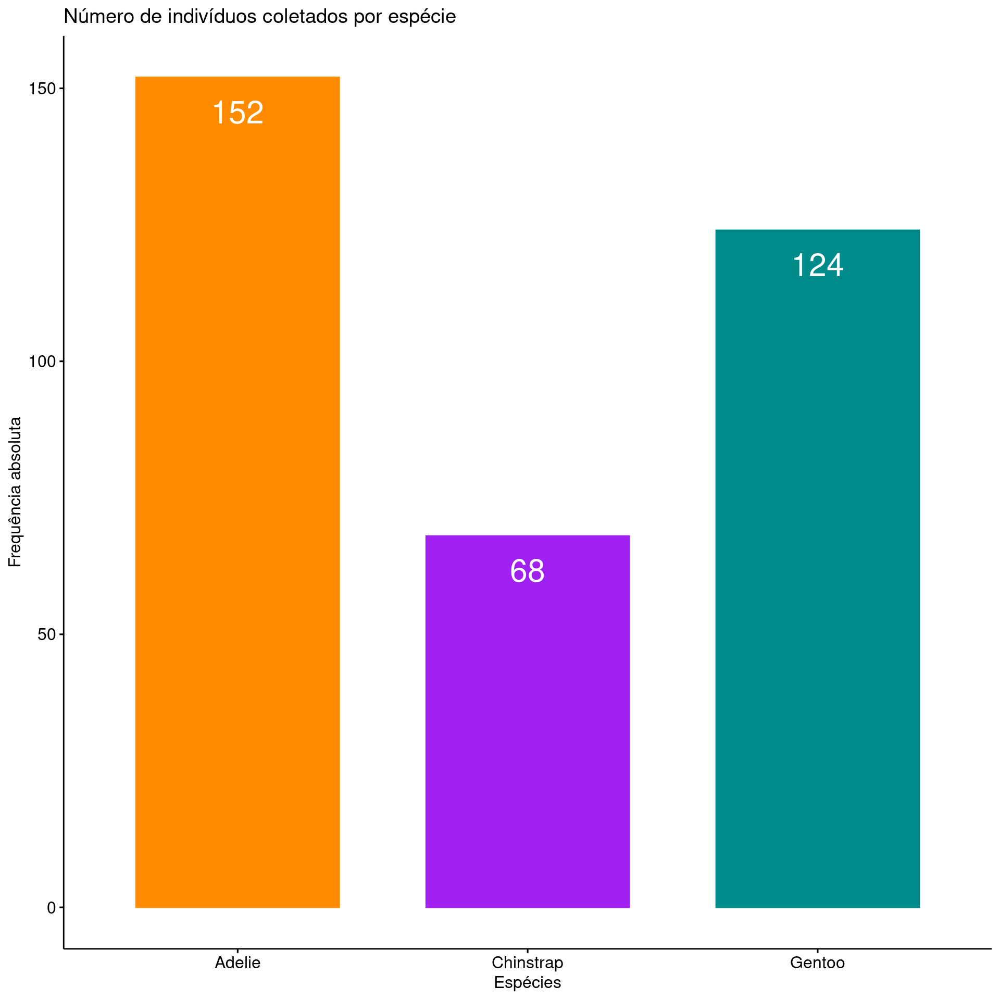
Gráfico de barras (Bar plot)
ggpubr
ggbarplot(penguins_count,
x = "species",
y = "n",
fill = "species",
color = "species",
palette = c("darkorange", "purple", "cyan4"),
label = TRUE,
lab.pos = "out",
lab.col = "black",
lab.size = 8,
main = "Número de indivíduos coletados por espécie",
xlab = "Espécies",
ylab = "Frequência absoluta",
legend = "none",
orientation = "horiz")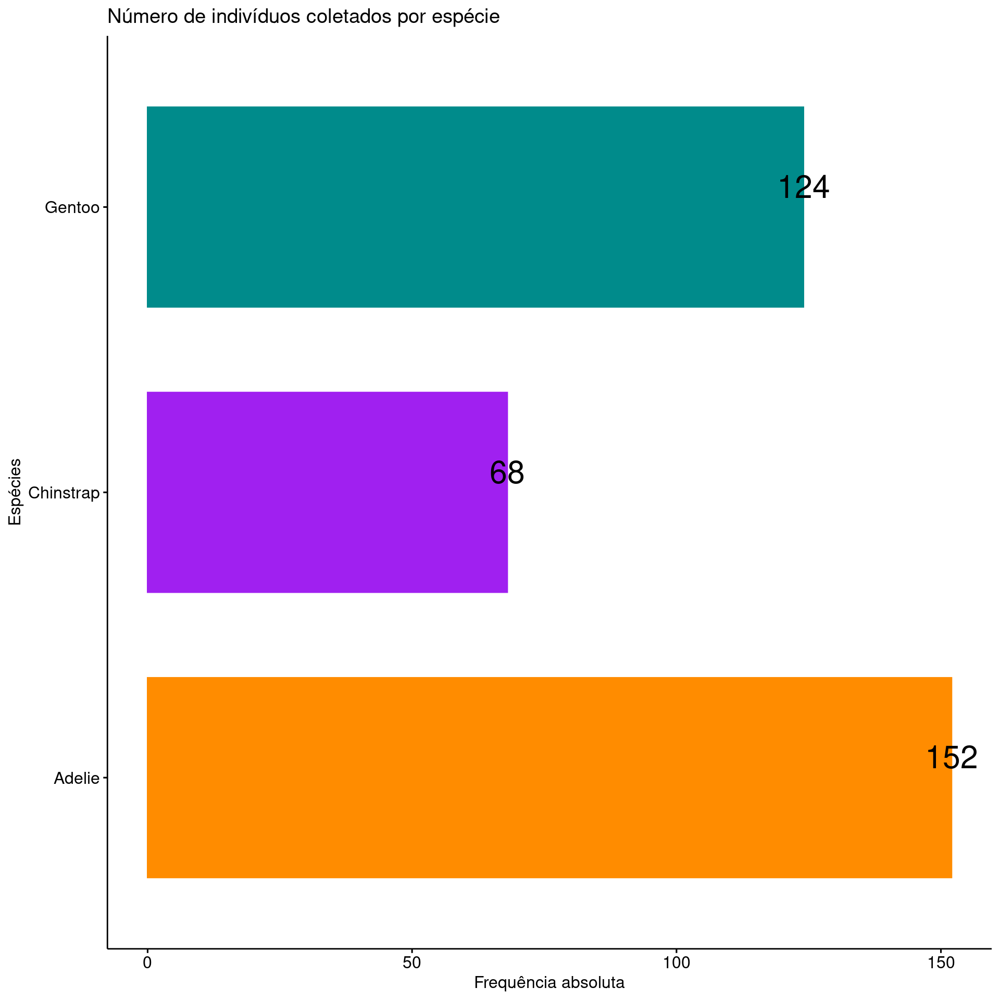
Gráfico de caixas
(Box plot)
Gráfico de caixas (Box plot)
Representa dados de duas colunas
Dados do tipo categóricos: X = categórico e Y = contínuo
Resume informações de medidas contínuas para dois ou mais fatores categóricos

Gráfico de caixas (Box plot)
Intervalo inter-quartil (interquartile range - IQR)
Limite inferior e limite superipor (1.5 x IQR)
Valores exteriores (outliers)


Gráfico de caixas (Box plot)


Gráfico de caixas (Box plot)


Gráfico de caixas (Box plot)

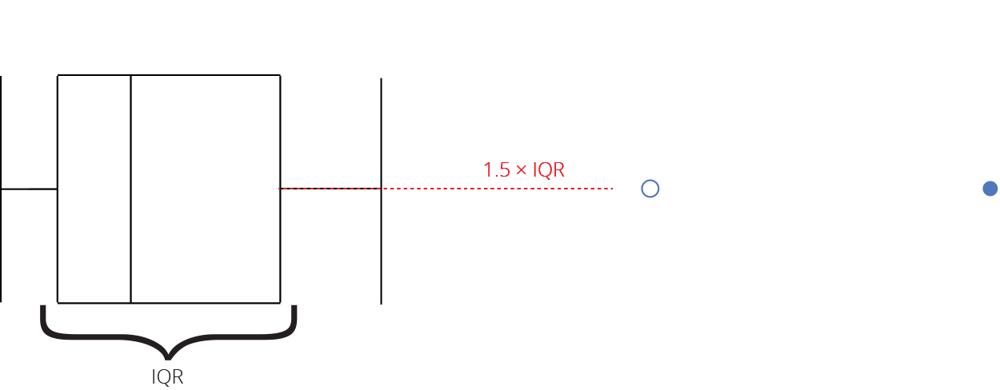
Gráfico de caixas (Box plot)
Gráfico de caixas (Box plot)

Gráfico de caixas (Box plot)

Gráfico de caixas (Box plot)
graphics
Gráfico de caixas (Box plot)
ggplot2
Gráfico de caixas (Box plot)
ggplot2
ggplot(data = penguins,
aes(x = species, y = flipper_length_mm, fill = species)) +
geom_boxplot(width = .3,
show.legend = FALSE) +
geom_jitter(alpha = .5,
show.legend = FALSE,
position = position_jitter(width = .1, seed = 0)) +
scale_fill_manual(values = c("darkorange", "purple", "cyan4")) +
theme_bw(base_size = 15) +
labs(x = "Species", y = "Flipper length (mm)")Gráfico de caixas (Violin plot)
ggplot2
ggplot(data = penguins,
aes(x = species, y = flipper_length_mm, fill = species)) +
geom_violin(width = .3,
show.legend = FALSE) +
geom_jitter(alpha = .5,
show.legend = FALSE,
position = position_jitter(width = .1, seed = 0)) +
scale_fill_manual(values = c("darkorange", "purple", "cyan4")) +
theme_bw(base_size = 15) +
labs(title = "Pontos com jitter", x = "Species", y = "Flipper length (mm)")Gráfico de caixas (Box plot)
ggpubr
Gráfico de caixas (Violin plot)
ggpubr
Gráfico de dispersão (Scatter plot)
Gráfico de dispersão (Scatter plot)
Representa dados de duas colunas
Dados do tipo categóricos: X = contínuo e Y = contínuo
Plota a relação entre duas variáveis contínuas

Gráfico de dispersão (Scatter plot)
graphics
Gráfico de dispersão (Scatter plot)
ggplot2
ggplot(data = penguins,
aes(x = bill_length_mm,
y = bill_depth_mm,
color = species,
shape = species)) +
geom_point(size = 3, alpha = .8) +
scale_shape_manual(values = c(19, 15, 17)) +
scale_color_manual(values = c("darkorange", "purple", "cyan4")) +
theme_bw(base_size = 15) +
labs(x = "Comprimento do bico (mm)",
y = "Profundidade do bico (mm)",
color = "Espécies", shape = "Espécies")
Gráfico de dispersão (Scatter plot)
ggplot2
ggplot(data = penguins,
aes(x = bill_length_mm,
y = bill_depth_mm,
color = species,
shape = species)) +
geom_point(size = 3, alpha = .8) +
geom_smooth(method = "lm", se = FALSE) +
scale_shape_manual(values = c(19, 15, 17)) +
scale_color_manual(values = c("darkorange", "purple", "cyan4")) +
theme_bw(base_size = 15) +
labs(x = "Comprimento do bico (mm)",
y = "Profundidade do bico (mm)",
color = "Espécies", shape = "Espécies")Gráfico de dispersão (Scatter plot)
Same Stats, Different Graphs: Generating Datasets with Varied Appearance and Identical Statistics through Simulated Annealing
Justin Matejka, George Fitzmaurice

Gráfico de dispersão (Scatter plot)
ggplot2
Gráfico de dispersão (Scatter plot)
ggplot2
Gráfico de dispersão (Scatter plot)
ggpubr
Gráfico de dispersão (Scatter plot)
ggpubr
Gráfico de dispersão (Scatter plot)
ggpubr
Gráfico de dispersão (Scatter plot)
ggpubr
Gráfico pareado
(Pairs plot)
Gráfico pareado (Pairs plot)
Representa dados de duas colunas
Dados do tipo categóricos: X = contínuo e Y = contínuo
Plota a relação entre duas variáveis contínuas, mas para várias colunas

Gráfico pareado (Pairs plot)
graphics
Gráfico pareado (Pairs plot)
GGally
Gráfico pareado (Pairs plot)
GGally
Gráfico pareado (Pairs plot)
psych
Combinando gráficos
Descrição
Muitas vezes precisamos combinar gráficos para representar nossos dados
Essa tarefa pode ser realizada depois da criação dos gráficos em aplicativos como Inkskape ou GIMP
Outras vezes, podemos usar códigos e pacotes do R para fazer essa tarefa

Combinando gráficos
graphics
par(mfrow = c(1, 2))
boxplot(flipper_length_mm ~ as.factor(species),
data = penguins,
col = c("darkorange", "purple", "cyan4"),
main = "Espécies por amostragens",
xlab = "Espécies",
ylab = "Comprimento da nadadeira (mm)",
cex.main = 1.5, cex.lab = 1.3, cex.axis = 1.2)
plot(bill_depth_mm ~ bill_length_mm,
data = penguins,
pch = 20,
cex = 1.5,
main = "Comprimento e profundidade do bico",
xlab = "Comprimento do bico (mm)",
ylab = "Profundidade do bico (mm)",
cex.lab = 1.5, cex.axis = 1.3)Combinando gráficos
graphics
par(mfrow = c(2, 1))
boxplot(flipper_length_mm ~ as.factor(species),
data = penguins,
col = c("darkorange", "purple", "cyan4"),
main = "Espécies por amostragens",
xlab = "Espécies",
ylab = "Comprimento da nadadeira (mm)",
cex.main = 1.5, cex.lab = 1.3, cex.axis = 1.2)
plot(bill_depth_mm ~ bill_length_mm,
data = penguins,
pch = 20,
cex = 1.5,
main = "Comprimento e profundidade do bico",
xlab = "Comprimento do bico (mm)",
ylab = "Profundidade do bico (mm)",
cex.lab = 1.5, cex.axis = 1.3)Combinando gráficos
ggplot2
ggplot_boxplot <- ggplot(data = penguins,
aes(x = species, y = flipper_length_mm, fill = species)) +
geom_boxplot(width = .3,
show.legend = FALSE) +
geom_jitter(alpha = .5,
show.legend = FALSE,
position = position_jitter(width = .1, seed = 0)) +
scale_fill_manual(values = c("darkorange", "purple", "cyan4")) +
theme_bw(base_size = 15) +
labs(x = "Species", y = "Flipper length (mm)")
ggplot_boxplot
Combinando gráficos
ggplot2
ggplot_scatterplot <- ggplot(data = penguins,
aes(x = bill_length_mm,
y = bill_depth_mm,
color = species,
shape = species)) +
geom_point(size = 3, alpha = .8) +
scale_shape_manual(values = c(19, 15, 17)) +
scale_color_manual(values = c("darkorange", "purple", "cyan4")) +
theme_bw(base_size = 15) +
labs(x = "Comprimento do bico (mm)",
y = "Profundidade do bico (mm)",
color = "Espécies", shape = "Espécies")
ggplot_scatterplotCombinando gráficos
cowplot
Combinando gráficos
cowplot
Combinando gráficos
patchwork
Combinando gráficos
patchwork
Gráficos animados

Gráficos animados
gganimate
# pacote
# install.packages("gganimate")
library(gganimate)
plot_animate <- ggplot(data = penguins,
aes(x = bill_length_mm,
y = bill_depth_mm,
color = species)) +
geom_point() +
scale_color_manual(values = c("darkorange", "purple", "cyan4")) +
theme_bw(base_size = 15) +
labs(x = "Comprimento do bico (mm)",
y = "Profundidade do bico (mm)",
color = "Espécies", shape = "Espécies") +
labs(title = "{closest_state}") +
transition_states(species) +
enter_grow() +
exit_fade()
plot_animate
Gráficos animados
gganimate
Gráficos interativos
Gráficos interativos
plotly
# pacote
# install.packages("plotly")
library(plotly)
plot_ly(data = penguins,
x = ~bill_length_mm,
y = ~bill_depth_mm,
type = "scatter",
color = ~species,
colors = c("darkorange", "purple", "cyan4")) %>%
layout(xaxis = list(title = "Comprimento do bico (mm)"),
yaxis = list(title = "Profundidade do bico (mm)"))Gráficos interativos
plotly
plot_ly(data = penguins,
x = ~bill_length_mm,
y = ~bill_depth_mm,
z = ~body_mass_g,
type = "scatter3d",
color = ~species,
colors = c("darkorange", "purple", "cyan4")) %>%
layout(scene = list(xaxis = list(title = "Comprimento do bico (mm)"),
yaxis = list(title = "Profundidade do bico (mm)"),
zaxis = list(title = "Massa (g)")))Gráficos interativos
plotly
plot_penguins_scatter_int <- ggplotly(
ggplot(data = penguins,
aes(x = bill_length_mm,
y = bill_depth_mm,
color = species,
shape = species)) +
geom_point(size = 3, alpha = .8) +
geom_smooth(method = "lm", se = FALSE) +
scale_shape_manual(values = c(19, 15, 17)) +
scale_color_manual(values = c("darkorange", "purple", "cyan4")) +
theme_bw(base_size = 15) +
labs(x = "Comprimento do bico (mm)",
y = "Profundidade do bico (mm)",
color = "Espécies", shape = "Espécies"))
plot_penguins_scatter_intGráficos interativos
plotly
Gráficos usando interface

Gráficos usando interface
esquisse

Dúvidas?
Material de estudo
Livros
Sites
Muito obrigado!